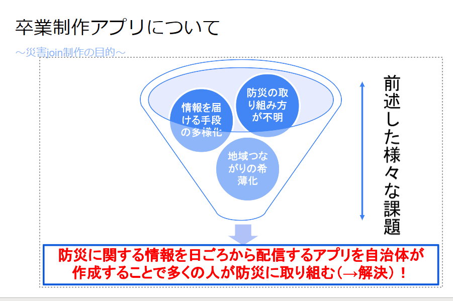
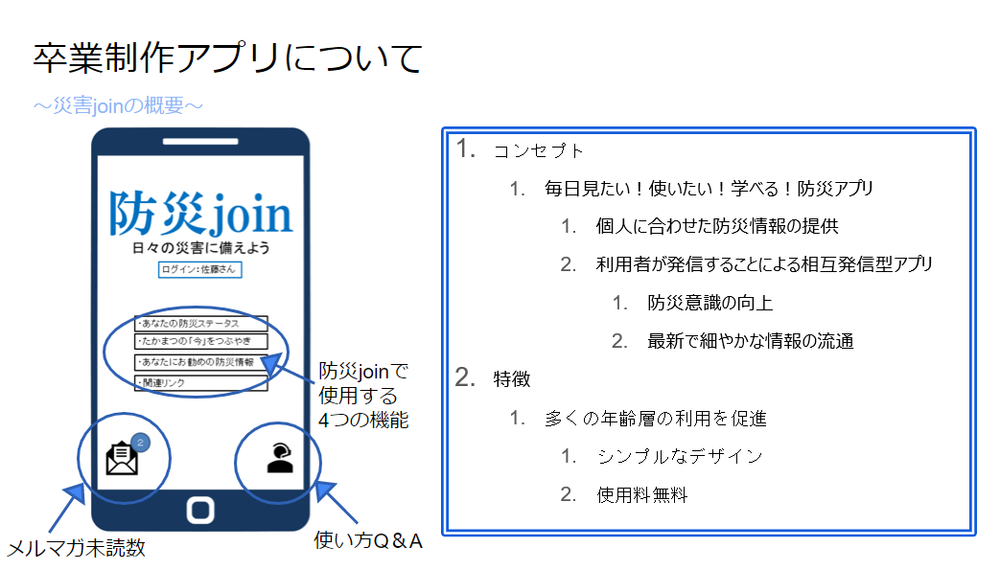
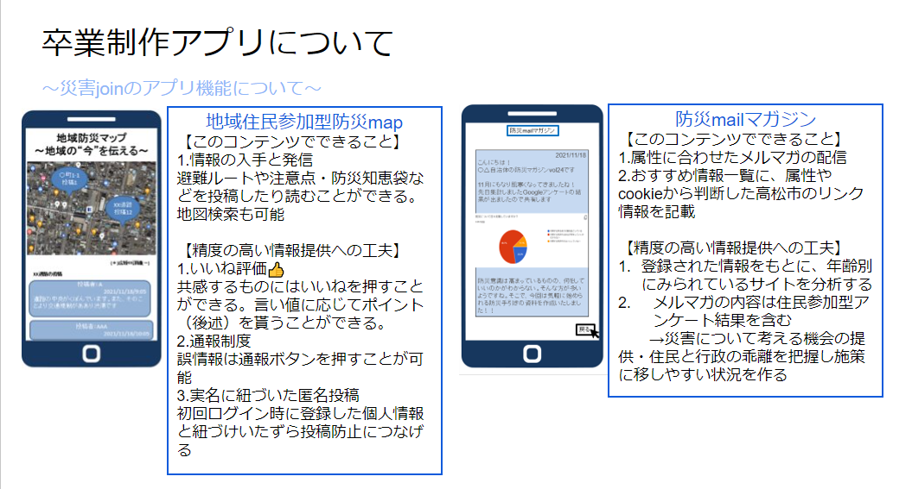
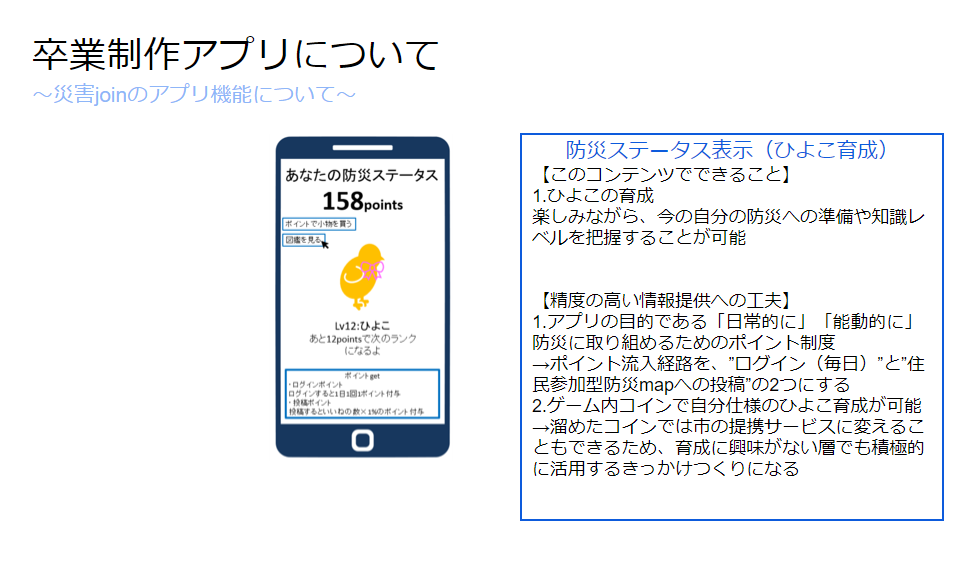

| 卒業制作の報告をまとめます |
|
卒業制作はチャレンジオープンガバナンスに応募しました。 高松市のスマートシティを広めるための課題解決案の提案として、 防災の視点からスマートシティたかまつに親しんでもらうための案を考えました。 我々は防災スマートフォンアプリを作成しいろんな人にデジタル機器に親しんでもらい スマートシティにも親しんでもらいたいと考えております。 課題としては防災意識はあるものの取り組めない人達がいること 情報取得経路の多様化、地域のつながりの減少がある この課題を解決するために我々はアプリを作成することにより多くの人が防災に取り組むことを期待します。  我々が作った防災アプリ防災JOINについて紹介します。  普段から防災意識を高めることを目的としており、毎日利用したくなるような機能を付けました。  住民参加型の防災アプリにすることにより当事者意識を高めたり、利用者に必要な情報を与えます。  ひよこの育成システムというゲーミフィケーションの要素を取り入れることにより、より使ってもらえるアプリを想定しています。 我々は今回のアプリ作成においてAdaloというノーコードアプリで作成しました。 Adaloを利用した理由は主に2点あります。 1つめは予算面です。他のノーコードアプリや外部委託では費用が高くなり実現可能性が低いです。 Adaloであれば高くても月1万円以内と頑張れば出せる費用です。 2つめはアップデートの簡易性である。ノーコードアプリということで機能追加は容易であり、データ追加もエクセルと同じ要領で可能です。 実現可能性については費用面に関してはそこまで問題はないといえます。 高齢者が実際に使ってくれるかや周知に関しては自治組織と連携し周知や使い方のレクチャーなどを進めたいです。 災害時にスマホが使えるかに関してはスマホと紙の両利用を自分は推奨したいです。 ヒアリングにおいて地域住民は自分たちでマップを作っており、そのマップ作成の補助になればよいと思います。 ベストは当然スマホが使えればよい話だがそれはキャリアに委ねるしかないです。 最後にヒアリングに協力してくださり、チャレンジオープンガバナンスへの推薦をしてくださった 二番丁コミュニティセンター協議会会長根ヶ山里子様誠にありがとうございました。 |